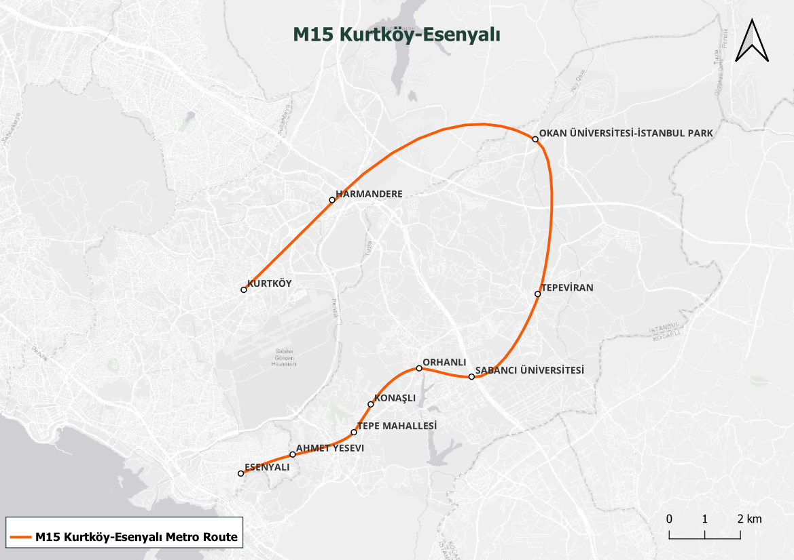
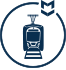

MKurtköy-Esenyalı Metro Route
The route is planned to start from M4 Kurtköy station and reach to the M4 Pendik-Tuzla extension route.
Integration with other routes
Integration with M4 line is planned at Kurtköy and its extension Esenyalı stations.

Hat Uzunluğu 25 KM
Seyahat Süresi x DK